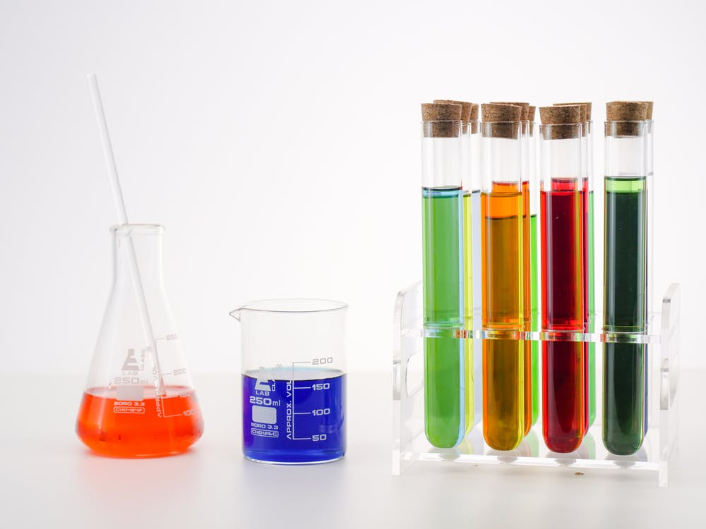
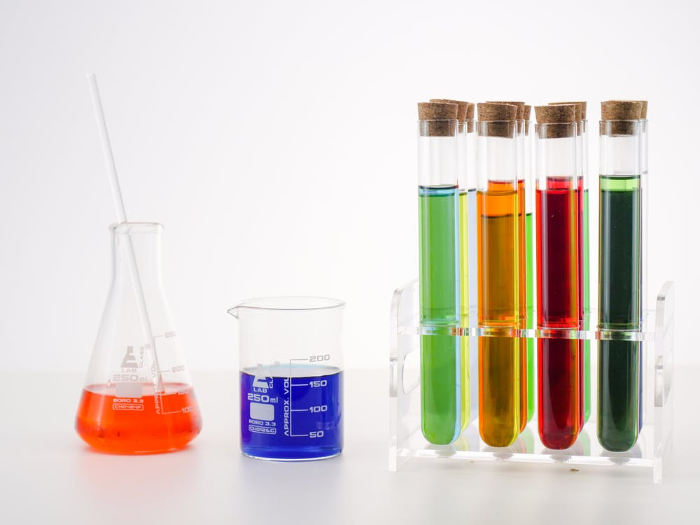

I`m kareem ibrahim olamilekan from Nigeria, i was born (01/Oct/1996), into the family of Mr and Mrs kareem atanda, i studied biochemistry from the famous known kwarapoly. Regardless of my profession, i am taciturn, mature, curious-minded. i found loud and busy environment unpleasant, i love to visit new places and see nature and it beauties.
i`m an online influencer equipped with expensive based foundation and fitness in the zones of front end developer(html and css), content creating, visual content and infograghic. i`m a creative crypto enthusiast with passion in promoting promising project, i have 4years experience in growing communities and promoting project that exceed client expectations.
copyright©2022